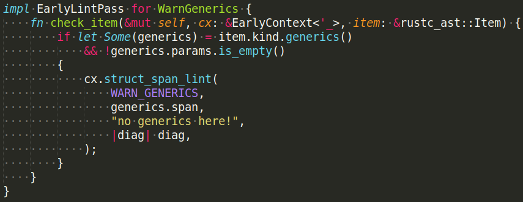
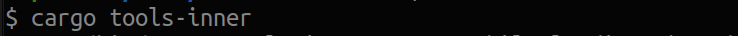

Écrire son propre linter Rust
présenté par Guillaume Gomez
Qui suis-je ?
Reviewer et contributeur sur le langage Rust. Membre de :- rustdoc (team leader)
- docs.rs
- dev-tools
- clippy-contributors
Je suis un ingénieur chez Huawei.
Déclarer un lint

Implementer un lint

main.rs

Lancer notre linter

Lancer notre linter


Wrapper le wrapper

Version blog post
blog.guillaume-gomez.fr/articles/2024-01-18+Writing+your+own+Rust+linter
Merci pour votre attention !
Plus d'articles/tutoriels sur Rust à< blog.guillaume-gomez.fr >
< guillaume1.gomez@gmail.com >
 @GuillaumeGomez
@GuillaumeGomez
 @imperioworld_
@imperioworld_
 @imperio@toot.cat
@imperio@toot.cat